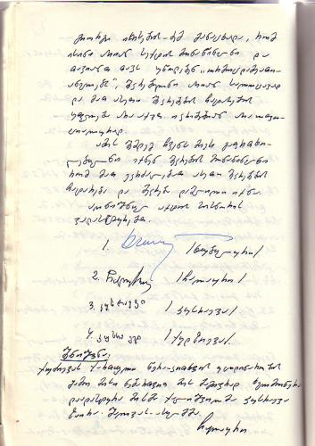

ორმოცდაათიანელთა ეკლესია: საბჭოთა რეპრესიები და დღევანდელობა
ავტორი: კონსტანტინე ჩაჩიბაია
ეკლესიის დაფუძნება და გავრცელების არეალი
რელიგიური გადმოცემით, ორმოცდაათიანელთა ეკლესიის წარმოშობა დაკავშირებულია ე.წ. „სულიწმინდის გადმოსვლის“ მოვლენასთან, რის შემდეგაც მორწმუნეები „უცხო ენაზე“ ამეტყველდნენ („გლოსოლალია“). ეს მოვლენა ერთგვარი ანალოგიაა სახარებისეული ამბის, რომლის თანახმადაც აღდგომიდან ორმოცდამეათე დღეს ქრისტეს მოწაფეებმა უეცრად სხვადასხვა ენებზე იწყეს საუბარი და ღვთის სიტყვის ქადაგება. ორმოცდაათიანელთა მიმდინარეობა 1901 წლის 1 იანვრის ღამეს, კანზასის შტატის ქალაქ ტოპეკაში განვითარებულ მოვლენებიდან იღებს სათავეს. გადმოცემის თანახმად, მეთოდისტური ეკლესიის მქადაგებელმა ჩარლზ ფოქს პარხამმა ამ ქალაქში ბიბლიის სკოლის 34 მოსწავლეს მისცა დავალება - ელოცათ და ემსჯელათ „საქმენი მოციქულთა“-ს შესახებ. სკოლის ერთ-ერთი მოსწავლე აგნას ნ. ოზმანი იყო პირველი, ვინც მიიღო სულიწმინდით ნათლობა და „უცხო ენაზე“ ამეტყველდა. მომდევნო დღეებში სხვა მოსწავლეებმაც იგივე ნიჭი გამოავლინეს. პარხამმა და მისმა მოწაფეებმა დაიწყეს ქადაგება ამერიკის სხვადასხვა შტატებში. ამ მოძრაობის პირველი სტაბილური ნავსაყუდელი 1906 წლიდან ლოს-ანჯელესში, პარხამის ერთ-ერთი მოსწავლის, უილიამ ჯეიმს სეიმურის მიერ იქნა დაფუძნებული. საწყის ეტაპზევე ორმოცდაათიანელთა ეკლესია რასობრივი თანასწორობით გამოირჩეოდა, რადგან წარმოადგენდა თეთრკანიანათა ამერიკული მეთოდისტური ეკლესიის „წმინდა მოძრაობისა“ და აფრო-ამერიკული ქრისტიანობის ნაერთს. რასობრივ უთანასწორობასთან ბრძოლა ლოს-ანჯელესში დაფუძნებული ეკლესიისთვის მუდმივ საქმედ იქცა. აშშ-დან რელიგიური მოძღვრება ევროპაში მალევე გავრცელდა ინგლისელი ტომას ბოლ ბარეტის თაოსნობით, რომელიც ამერიკაში მოგზაურობისას დაესწრო ორმოცდაათიანელთა მსახურებას და მათი მიმდევარი გახდა. მის მიერ ნორვეგიაში დაარსებული ეკლესიიდან „ფილადელფია“ დანარჩენ ევროპაში ვრცელდებოდა ორმოცდაათიანელთა სწავლება. სამისიონერო საქმიანობის თვალსაზრისით განსაკუთრებით აქტიურობდნენ შვედი ორმოცდაათიანელები. დღეს მსოფლიოს მასშტაბით ორმაცდაათიანელთა მიმდევრების რიცხვი 279 მილიონ ადამიანს აჭარბებს.
ორმოცდაათიანელთა რელიგიური გაერთიანების დაფუძნება საქართველოში და საბჭოთა დევნის პერიოდი
ორმოცდაათიანელთა ეკლესია თავისი ისტორიის დასაწყისს XIX საუკუნის მეორე ნახევარში კავკასიაში მოღვაწე „შვედურ მისიას“ და მის დამფუძნებელს, ნილს ფედერიკ ჰოიერს უკავშირებს. ჰოიერს 1882 წელს დაევალა კავკასიაში გამგზავრება და მისიონერული საქმიანობის დაწყების შესაძლებლობის შეფასება. თუმცა ოფიციალურად, პირველ ორმოცდაათიანელ მისიონერად მიიჩნევა ენდრიუ დევიდ ურუშანი, რომელიც საქართველოში ირანიდან ჩამოვიდა. სწორედ ამ ადამიანს მიეწერება ტიფლისში, არმავირსა და პეტროგრადში ორმოცდაათიანელთა ეკლესიების დაარსება. თბილისის გარეთ, საქართველოს რეგიონებში ორმოცდაათიანელთა ეკლესიის გავრცელებაში მნიშვნელოვანი როლი ითამაშა უკრაინიდან 1929 წელს შიმშილობას გამოქცეული ორმოცდაათიანელების დასახლებებმა ფოთში, ბათუმში, სენაკში, ოზურგეთსა და მიმდებარე სოფლებში.
ორმოცდაათიანელებმა საბჭოთა საქართველოში ბევრი სირთულე გადაიტანეს. პირველი მასობრივი რეპრესია მოხდა 1932 წელს, როცა 300 ორმოცდაათიანელი ფოთის პორტიდან გაურკვეველი მიმართულებით წაიყვანეს. რა ბედი ეწიათ ამ ადამიანებს, ვერავინ გაარკვია. ორმოცდაათიანელთა ეკლესიის წევრების დევნის შემთხვევები განგრძობადი და მრავალჯერადი იყო. საბჭოთა საქართველოში, სხვა/განსხვავებული რწმენის ადამიანების მსგავსად, ორმოცდაათიანელთა ჯგუფებზეც მკაცრ ზედამხედველობას აწარმოებდნენ ერთი მხრივ უშიშროების სამსახურები, ხოლო მეორე მხრივ რელიგიის საქმეთა საბჭოს რწმუნებულთა საზოგადოებები. უშიშროების სამსახურები ახდენდნენ მორწმუნე ადამიანების იდენტიფიცირებას, ნერგავდნენ თავიანთ აგენტურას რელიგიურ ჯგუფებში, რათა დეტალური ინფორმაცია ჰქონოდათ იქ არსებული განწყობების შესახებ. აშკარაა, რომ უშიშროების ორგანოები და რელიგიის საქმეთა საბჭოს რწმუნებულთა საზოგადოებები კოორდინირებულად მოქმედებდნენ. რელიგიის საქმეთა საბჭოს რწმუნებულთა საზოგადოების ანგარიშებში მოცემულია სხვადასხვა რელიგიური ორგანიზაციის, მათ შორის ორმოცდაათიანელთა შესახებ დეტალური ინფორმაცია. კერძოდ, მონაცემები მიმდევართა რიცხვის დინამიკის, ასევე ამ ორგანიზაციების ფინანსური მდგომარეობის შესახებ. შეუძლებელია რელიგიის საქმეთა საბჭოს რწმუნებულთა საზოგადოებას ამ სახის ინფორმაცია მოეპოვებინა შესაბამისი უშიშროების სამსახურის აგენტურასთან კავშირის გარეშე.
რელიგიური ორგანიზაციების რეგისტრაციის ფუნქცია საბჭოთა კავშირში ეკისრებოდა სხვადასხვა ტერიტორიული ერთეულების აღმასკომებს. რეგისტრაციისთვის აუცილებელი იყო რელიგიის საქმეთა საბჭოს მიერ გაცემული დადებითი რეკომენდაცია. საქართველოს სხვადასხვა დასახლებულ პუნქტში მცხოვრები ორმოცდაათიანელები კი ძირითადად დაურეგისტრირებელ ჯგუფებად რჩებოდნენ, რის გამოც მათ არ ჰქონდათ საკუთარი სამლოცველოს ქონის ფორმალური უფლებაც კი. ორმოცდაათიანელთა ჯგუფებს ხშირად რეგისტრაციაზე უარს ეუბნებოდნენ, რადგან ისინი საბჭოთა ხელისუფლებასთან არ თანამშრომლობდნენ. ორმოცდაათიანელები უარს ამბობდნენ საბჭოთა ჯარში სავალდებულო სამხედრო სამსახურზე. დღეს კი წვევამდელობის ასაკს მიღწეული ორმოცდაათიანელები ჩვეულებრივ გადიან სამსახურს ქართულ საჯარისო ნაწილებში. საბჭოთა ჯარში არ წასვლა იყო არა პაციფისტური ნაბიჯი მათი მხრიდან, არამედ საბჭოთა სისტემასთან დაპირისპირების მკაფიო მაგალითი. მიუხედავად დევნისა, ორმოცდაათიანელები მაინც ახერხებდნენ ფარულად შეეძინათ მიმდევრები საქართველოს სხვადასხვა კუთხეებში. სწორედ მაშინდელი მისიონერული მოღვაწეობის შედეგად ჩამოყალიბდა ორმოცდაათიანელების ჯგუფები აფხაზეთის ფაქტობრივად ყველა დიდ დასახლებულ პუნქტში, გორში, ცხინვალსა და მიმდებარე სოფლებში, რუსთავში, ჭიათურაში და სხვა არაერთ სოფელსა თუ ქალაქში. ორმოცდაათიანელთა მიმდევრების რაოდენობის ზრდას ხელს უწყობდა ასევე, ამ ეკლესიის წევრთა გადმოსვლა უკრაინიდან საქართველოში. ხშირი იყო უკრაინელი ხუცესების მსახურების შემთხვევებიც.

საქართველოს სახარების რწმენის (ორმოცდაათიანული) ეკლესიის სტრუქტურა და საქველმოქმედო მსახურება
საქართველოში ორმოცდაათიანელთა რამდენიმე რელიგიური ჯგუფი არსებობს. მათგან ყველაზე მრავალრიცხვოვან ორგანიზაციას წარმოადგენს სახარების რწმენის ეკლესია, რომელიც ამ სახელწოდებით, 2013 წლიდან არის რეგისტრირებული. საქართველოს თითქმის მთელ ტერიტორიაზე განფენილ ორმოცდაათიანელთა ჯგუფებს ზედამხედველობენ ხელდასმული ეპისკოპოსები. სწორედ ეს ეპისკოპოსები, უფროს ეპისკოპოსთან ერთად, შეადგენენ სულიერ საბჭოს, რომელიც ეკლესიის უმაღლესი ზედამხედველობითი ორგანოა. ორგანიზაციის ადმინისტრაციული ცენტრი მდებარეობს თბილისში.
სახარების რწმენის ეკლესია ცდილობს არ შემოიფარგლოს მხოლოდ რიტუალური ღვთისმსახურებით და სოციალურ მსახურებასაც აქტიურად ეწევა. 2000 წლიდან რელიგიური გაერთიანების ბაზაზე დაფუძნდა ბიბლიის კოლეჯი, რომელშიც ნებისმიერ მსურველს შეუძლია ისწავლოს. ფუნქციონირებს სასწავლო ცენტრი ეკლესიის ხუცესთათვის, სადაც სწავლობენ არა მარტო საქართველოს ტერიტორიაზე მსახურების მსურველი ორმოცდაათიანელები, არამედ სხვადასხვა ქვეყნის მოქალაქეებიც. ასევე, ეკლესია ცდილობს მსგავსი საგანმანათლებლო კერების შექმნას სხვა ქალაქებში არსებულ ადგილობრივ ეკლესიებთანაც . პერიოდულად გამოიცემა როგორც ჟურნალ-გაზეთები, ასევე სხვადასხვა სახის საღვთისმეტყველო კრებულები. ეკლესია თავისი საქმიანობის უმნიშვნელოვანეს მიმართულებად მიიჩნევს ქველმოქმედებას და რეგულარულად მონაწილეობს მრავალ, როგორც ერთჯერად, ასევე განმეორებადი ხასიათის საქველმოქმედო აქციაში. ქველმოქმედების ძირითადი მიმართულებებია:
მზრუნველობამოკლებულ ბავშვთა სახლებში მყოფი ბავშვების აღზრდასა და სოციალურ საჭიროებებზე ზრუნვა;
ფიზიკურად დაუძლურებულ ადამიანთა მეთვალყურეობა და მხარდაჭერა;
საპატიმრო დაწესებულებებში მყოფი პირების მორალური მხარდაჭერა;
მძიმე ეკონომიკურ მდგომარეობაში მყოფი ადამიანების საკვებითა და სხვა პირველადი საჭიროების საგნებით უზრუნველყოფა.
ამ და სხვა საქველმოქმედო მიზნების განსახორციელებლად რელიგიურ გაერთიანებას 1991-1996 წლებში გახსნილი ჰქონდა უფასო სასადილო, ხოლო სასადილოს დახურვის შემდეგ, 1996 წლიდან 2006 წლამდე, ეკლესია პროდუქტებით ეხმარებოდა მოქალაქეებს. დღემდე მსგავსი სახის დახმარება გარდაბანსა და თბილისში 120-მდე ოჯახზე გაიცემა. ეკლესია მუდმივად ეხმარებოდა ქუთაისის მოხუცთა თავშესაფარს სხვადასხვა ნივთებით, ასევე ონკოლოგიურ საავადმყოფოს და ტუბერკულოზისა და ფილტვის დაავადებათა დისპანსერის პაციენტებს. ეკლესიის „ქალთა ასოციაცია“ ეხმარება 15 მარტოხელა დედას სოციალური პრობლემების მოგვარებაში და უფინანსებს მათ შვილებს უცხო ენის შემსწავლელ კურსებს. ეკლესია არაერთხელ ჩართულა მთელი ქვეყნისთვის მნიშვნელოვანი ტრაგიკული მოვლენების გამო დაწყებულ საქველმოქმედო აქციებში. მაგალითად, ეკლესიამ ფინანსური დახმარება აღმოუჩინა 1989 წლის 9 აპრილის აქციაზე რუსთაველის გამზირზე გაზით მოწამლულ ადამიანებს, 2005 წელს, სახალხო დამცველის აპარატთან ერთად დაეხმარა წყალდიდობით დაზარალებულ ოჯახებს. იმავე წელს აჭარაში სტიქიური უბედურებისგან დაზარალებულ მოქალაქეებს ჰუმანიტარული ტვირთი გაუგზავნა. 2008 წელს საქართველოს სახარების რწმენის ორმოცდაათიანული ეკლესია აგვისტოს ომის შედეგად დაზარალებულებს და იძულებით გადაადგილებულ პირებს დაეხმარა როგორც ომის დღეებში, ასევე შემდგომაც. ეკლესიამ გამოყო მობილური ჯგუფები, რომლებიც პროდუქტებით და საჭირო ნივთებით ამარაგებდა დაზარალებულებს. სახარების რწმენის ეკლესიის თქმით, ისინი მომავალში უფრო მასშტაბური საქველმოქმედო აქციების გამართვასაც გეგმავენ.


სახელმწიფოს დისკრიმინაციული პოლიტიკა
სახარების რწმენის ეკლესიას საქართველოში ბევრი დაბრკოლება ექმნება. სახელმწიფო დღეს რელიგიური გაერთიანებისთვის საბჭოთა პერიოდში მიყენებულ ზიანს არ აღიარებს. ამიტომ ეკლესია ვერ იღებს ამ სტატუსის შესაბამის მატერიალურ კომპენსაციას. ეკლესიის წარმომადგენლები საზოგადოებაში არსებულ ნეგატიურ სტერეოტიპებზეც საუბრობენ. მათ ხშირად მოიხსენიებენ „სექტანტებად“. მათი განსხვავებული რელიგიური პრაქტიკა ქართულ იდენტობასთან შეუთავსებლად აღიქმება. ხშირია საჯარო სკოლებში მოსწავლეების დისკრიმინაციისა და უთანასწორო მოპყრობის შემთხვევები.
რელიგიურ გაერთიანებას უარს ეუბნებიან საჯარო სივრცეში ღონისძიებების გამართვაზეც. მაგალითად, 2014 წლის ივნისში ეკლესია მასპინძლობდა საერთაშორისო ქრისტიანულ-ევანგელური გაერთიანებების ღონისძიებას „იმედის ფესტივალი.“ ამ დღისთვის ფესტივალის ორგანიზატორები ერთი წლის განმავლობაში ემზადებოდნენ. ორგანიზატორებმა სპორტის სასახლის დირექციასთან ხელშეკრულება დიდი ხნით ადრე გააფორმეს და მომსახურების თანხაც გადაიხადეს. ფესტივალის გამართვას საპროტესტო განცხადებებით გამოეხმაურნენ მართლმადიდებელი სასულიერო პირები და სხვადასხვა საზოგადოებრივი ჯგუფები.
საზეიმო გახსნამდე სამი დღით ადრე, სპორტის სასახლის ერთ-ერთი ფლიგელის სახურავზე გაჩნდა ხანძარი, რომელიც მალევე ჩააქრეს. სპორტის სასახლის დირექტორმა ორგანიზატორებს განუცხადა, რომ შენობის უსაფრთხოების რისკების გამო, სასახლეში ღონისძიებას ვერ გამართავდნენ. ხანძრის შედეგისა და უსაფრთხოების პირობების შესაფასებლად, ორგანიზატორებს დამოუკიდებელი ექსპერტიზის ჩატარებაზეც კი უარი უთხრეს. იქედან გამომდინარე, რომ ხანძარის მასშტაბი მცირე იყო და ორგანიზატორები, სახალხო დამცველის და არასამთვრობო ორგანიზაციების წარმომადგენლებთან ერთად ხანძრის მომდევნო დღეებში შეუზღუდავად შედიოდნენ შენობაში, ამიტომ ადმინისტრაციის დამოკიდებულება აძლიერებდა ეჭვს, რომ ღონისძიების გამართვას ხელოვნურად შექმნილი ბარიერები აბრკოლებდა.
საბოლოოდ, საქართველოს სახარების რწმენის ეკლესიამ ფესტივალის გასამართად ალტერნატიული სივრცის მოძიება სცადა და თბილისში არსებულ ყველა დიდ ობიექტს მიმართა თხოვნით, თუმცა ღონისძიების ჩასატარების საშუალება არავინ მისცა. საბოლოოდ, ორგანიზატორები იძულებული გახდნენ ფესტივალი, რომელშიც 150 ქრისტიანული კონფესია და უამრავი სტუმარი მონაწილეობდა, სახარების რწმენის ეკლესიის ეზოში, შეზღუდულ სივრცეში აღენიშნათ.
მსგავსი პრობლემები და უთანასწორო მოპყრობა ეკლესიის წარმომადგენლებს ხშირად უქმნის განცდას, რომ მოსახლეობის უმრავლესობისგან განსხვავებული რწმენის გამო, ისინი საქართველოს მეორეხარისხოვან მოქალაქეებად აღიქმებიან.


სტატიის მომზადება შესაძლებელი გახდა ამერიკელი ხალხის გულუხვი დახმარების წყალობით, რომელიც აშშ-ს საერთაშორისო განვითარების სააგენტოს (USAID) მეშვეობით იქნა გაწეული. სტატიის შინაარსზე პასუხისმგებელია ავტორი. ის შესაძლოა არ ასახავდეს USAID-ის, აშშ-ის მთავრობის ან აღმოსავლეთ-დასავლეთის მართვის ინსტიტუტის შეხედულებებს.